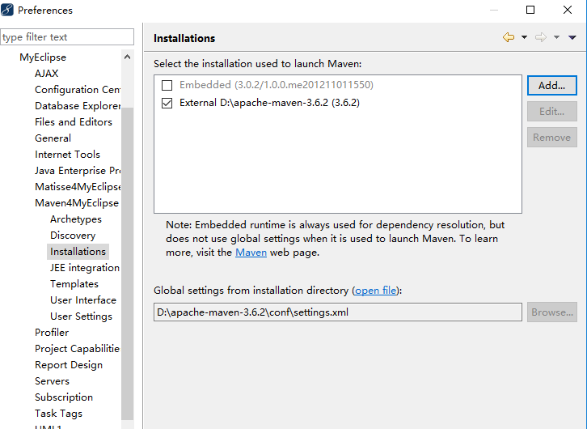
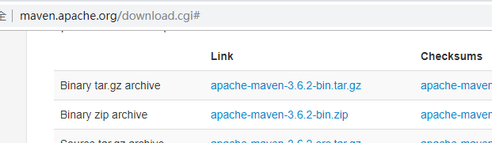
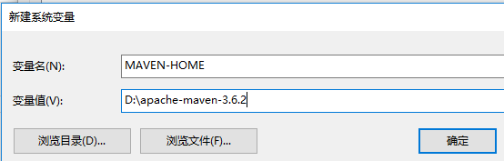
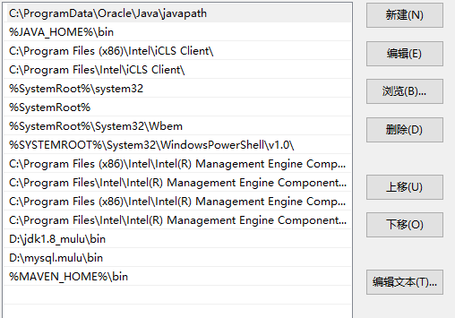
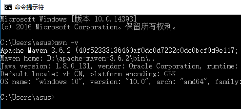
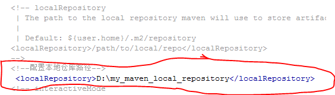
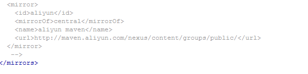
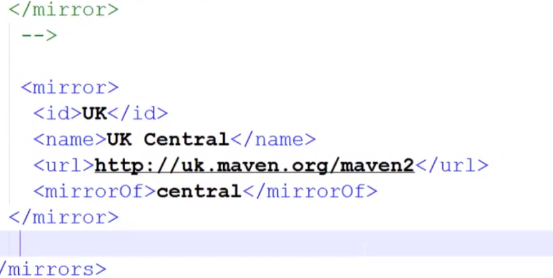
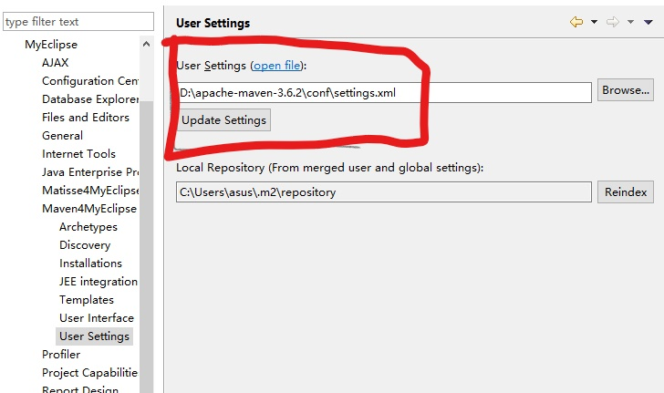

1.登录maven.apache.org,下载maven.，选择apache-maven-3.6.2-bin.zip,并解压到所需目录。

2.进行环境配置，计算机右击--属性---高级系统配置---环境变量--系统变量选择新建

3.配置path,在后面追加%MAVEN-HOME%\bin,有时需要在前面加；

4.判断maven是否配置成功，输cmd打开命令提示符，并输入mvn -v,显示maven版本号Maven 3.6.2,说明安装成功。

5.拷贝解压过后的maven文件中的settings.xml文件夹到D://user/asus/.m2路径下。便于后期导入
6.（1）打开.m2路径下的settings.xml,重新配置本地仓库，注意此部分一定写在注释符号<!---->外，并相应的在d盘创建my_maven_local_repository文件夹。

（2）配置镜像mirror。找到文件夹下的conf--setting.xml,打开.这里使用了阿里云的镜像，注意此部分一定写在注释符号<!---->外。

也可使用官方推荐的英国镜像

7.使用myeclipse配置maven.
(1) 打开myeclipse,进入Window--preference--myeclipse--maven4myeclipse,设置maven安装路径。点击Installations,再点击Add,添加保存在D盘的maven.
(2)点击User settings,,确保是电脑上maven中settings.xml的路径，即配置mirror的文件。

（3）点击Apply,确定。